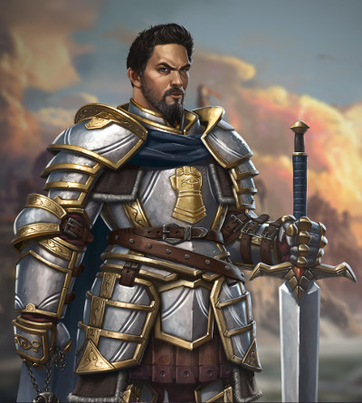

Paladin humain niv 3
Javen Tarmikos
Paladin (serment de Dévotion) 3 (900 PX)
Humain (h), loyal neutre
Chevalier
[ CARACTÉRISTIQUES ]
For 16 (+3) Dex 10 (+0) Con 14 (+2)
Int 11 (+0) Sag 12 (+1) Cha 15 (+2)
[ MAÎTRISES ]
Bonus de maîtrise +2
Sauvegardes Sag +3, Cha +4
Compétences Histoire +2, Médecine +3, Persuasion +4, Religion +2 (Perception passive 11)
Armes armes courantes, armes de guerre
Armures toutes les armures, boucliers
Outils jeu d'échecs draconiques
Langues commun, elfique, nain
[ COMBAT ]
pv 28 ; DV 3d10
Init +0 ; Vitesse 9 m
CA 16 (cotte de mailles 16, Dex +0)
Épée à deux mains. Corps à corps : +5 (2d6+3 tranchant ; lourde, à deux mains)
Morgenstern. Corps à corps : +5 (1d8+3 perforant ; -)
Dague. Corps à corps : +5 (1d4+3 perforant ; finesse, légère, lancer (portée 6 m/18 m))
[ SORTS DE PALADIN ]
Caractéristique d'incantation Charisme ; DD de sauvegarde des sorts 12 ; Bonus d'attaque avec un sort +4
Sorts à préparer chaque jour 3 ; Emplacements 3
[ CAPACITÉS ET TRAITS ]
Sens divin (3/repos long)
Imposition des mains (15 pv)
Style de combat (arme à deux mains)
Châtiment divin (+xd8)
Sorts de serment (protection contre le mal et le bien, sanctuaire)
Sorts de serment
Canalisation d'énergie divine (arme sacrée & renvoi des impies) (1/repos court)
Domestiques
[ ÉQUIPEMENT ]
Épée à deux mains, morgenstern, dague, cotte de mailles, symbole sacré/emblème, sac à dos, sac de couchage, gamelle, boite d'allume-feu, torche (10), rations/1 jour (10), gourde, corde en chanvre de 15 m, vêtements fins, chevalière, emblème, bourse
Coût de l'équipement 202 po ; Poids de l'équipement 64 kg
25 po
Poids des pièces 0.25 kg
[ PERSONNAGE ]
Taille M / 1,88 m / 82 kg ; Âge 28 ans
Yeux bleus ; Peau mate ; Cheveux bruns
Apparence du personnage De son corps robuste et épais, la première chose qui ressort est sa grande taille. Ses cheveux courts et soignés, ainsi que sa barbe longue et taillée laisse entrevoir ses nobles origines.
Traits Malgré ma noble naissance, je ne me place pas au-dessus des autres. Nous avons tous le même sang.
Idéal Le respect m'est dû de par ma position, mais toutes les personnes, quelle que soit leur position, méritent d'être traitées avec dignité.
Lien Je suis amoureux de l'héritière d'une famille que ma propre famille méprise.
Défaut Je cache un secret vraiment scandaleux qui pourrait ruiner la réputation de ma famille pour toujours.
Passé du personnage Javen vit le jour dans une famille noble. Il vécut son enfance comme écuyer d'un paladin et apprit auprès de lui la voie de la chevalerie, ainsi que l'histoire de son ordre et les doctrines religieuses de celui-ci. C'est vers ses 15 ans qu'il reçut de son maître sa première épée et passa serment de servir l'ordre ; il parcouru ainsi les routes afin de servir les desseins de sa divinité. Vers ses 26 ans, il participa à une grande guerre et, lors de la défense d'une ville, sauva une demoiselle dont il tomba amoureux. Il se rapprocha d'elle et découvrit qu'il s'agissait d'une roturière. Sachant que sa famille n'autoriserait pas cela, il pris la décision de se marier avec elle sans prévenir les siens. Il eu d'elle un premier enfant avant de repartir sur les sentiers de la guerre, car son ordre avait besoin de lui.
Stat et histoire de Costjupial